2025–present · East Lansing
WKAR at Michigan State University (Big Ten)
News Director
Launched three editorial products, enterprise hubs and contribution systems while daily-average active users increased 101.6%.
Lansing to Miami, the Bay Area and back
I have run coverage of a president’s funeral, hurricanes and tropical storms, California flood events, some of the state’s most destructive wildfire seasons, and the morning the Bay Area sky turned orange. I have launched a 24-hour streaming channel, a lifestyle show and two newsletters, and experimented early with OTT.
The work is always the same: decide what matters, get the right people to it, and make sure the audience can find it.
More than two decades across nine newsrooms: breaking news, weather, streaming and public media. The pattern is the same—decide what matters, build the team and make sure the audience can find it.

25
Years leading and developing multiplatform newsrooms
9
Newsrooms. Major, mid and small markets, coast to coast
2
Top-10 markets, plus two top-15 markets
5+
Years in California. Culture, politics, fire, quakes, immigration
The full arc · nine newsrooms
From producing weekends while still in college to leading a Big Ten public media newsroom.
2025–present · East Lansing
News Director
Launched three editorial products, enterprise hubs and contribution systems while daily-average active users increased 101.6%.
2021–2023 · Miami
Assistant News Director
Helped lead a 100+ employee operation, hired 30+ people and built the staffing and workflows behind the 24-hour stream and Headliners.
2016–2021 · San Francisco Bay Area
Executive Producer
Led Today in the Bay, directed historic wildfire coverage, experimented early with OTT and rebuilt morning programming through COVID.
2015–2016 · Houston
Executive Producer
Oversaw morning news programming, daily editorial execution and live coverage in a top-10 market.
2013–2015 · Grand Rapids
Assistant News Director
Managed daily newsroom operations, audience development and digital strategy in West Michigan.
2012–2013 · Detroit
Executive Producer
Oversaw morning news across broadcast and ClickOnDetroit in one of the country’s most demanding breaking-news markets.
2009–2012 · Indianapolis
Assistant News Director
Moved to the group’s flagship newsroom to manage daily operations, severe-weather coverage and digital strategy.
2001–2009 · Grand Rapids
Intern → Assistant News Director
Learned every seat, directed President Ford’s homecoming coverage and conceived the enduring eightWest franchise.
While at Central Michigan University
Weekend Newscast Producer
Began producing weekend newscasts while still enrolled—a working start before graduation.
Miami–Ft. Lauderdale · WFOR, CBS News Miami · 2021 to 2023

A top-15 market, a 100+ employee operation, and one of the busiest hurricane and breaking-news markets in the country. I was assistant news director.
As assistant news director in a top-15 market, I helped lead a 100+ employee newsroom through hurricanes, breaking news and a shift toward impact-first reporting. I recruited and onboarded more than 30 employees, oversaw the weather department and helped launch its hyper-local brand, and directed the staffing, workflows and daily execution behind CBS News Miami’s 24-hour stream, launched January 24, 2022. I also created Headliners, a streaming-native weekly review launched in two weeks.
The impact filter
We shifted coverage away from commodity crime and press-release stories toward accountability journalism. During that period, the 11 p.m. newscast climbed to #1 in the market.
The 24-hour stream
I oversaw the January 24, 2022 launch of the 24-hour CBS News Miami streaming channel: staffing models, workflows, original programming and daily editorial execution.
The weather department
I oversaw the weather department, directing its focus toward high-impact disruptive-weather storytelling and helping launch a new hyper-local weather brand for South Florida.
Rebuilding capacity
30+ employees recruited, hired and onboarded during my tenure, rapidly rebuilding newsroom depth, plus coaching anchors and reporters toward original storytelling.
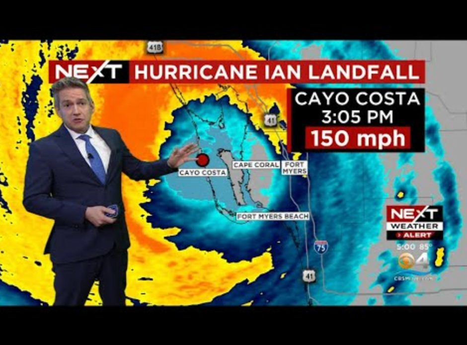
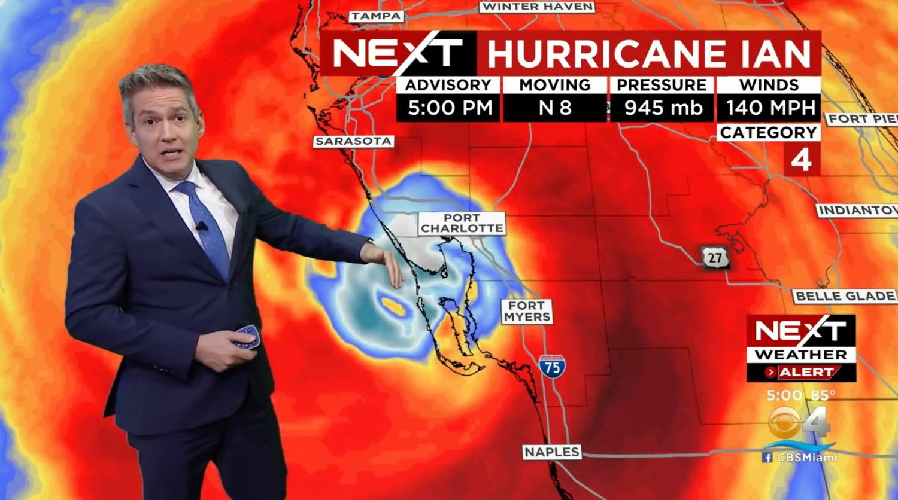

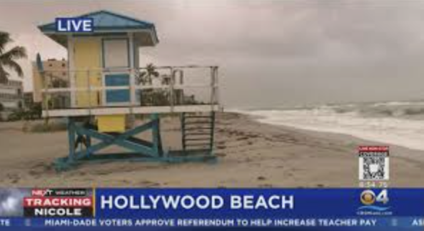
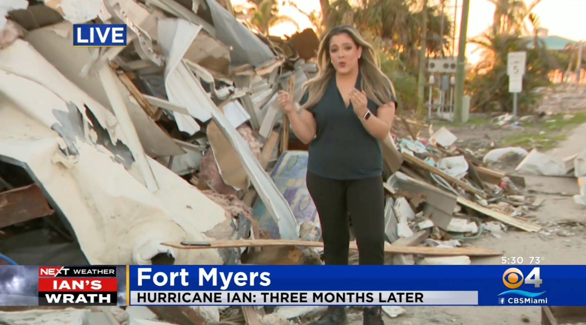

For the Surfside anniversary we built a full week of coverage plus 24 hours of stories from across the year, and gave an entire weekend of the stream over to it.
San Francisco Bay Area · NBC Bay Area · 2016 to 2021
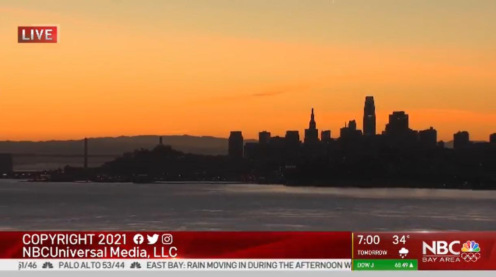
Executive producer of Today in the Bay, the flagship weekday newscast in one of NBC’s most competitive local newsrooms. Nearly six years on the West Coast: California culture and politics, the dynamics from the interior to the coasts, the immigration story, the quakes, and the microclimates where a forecast changes over a single ridgeline.
As executive producer of Today in the Bay, I led NBC Bay Area’s flagship weekday newscast and its team through nearly six years of California politics, wildfires, floods, quakes and microclimates. I set the editorial plan, coordinated field and studio coverage and made complex emergency information usable—from destructive fire seasons to the morning the Bay Area sky turned orange.


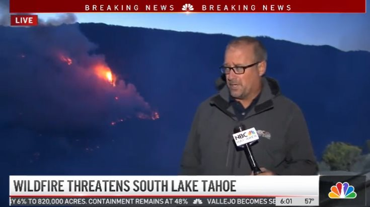
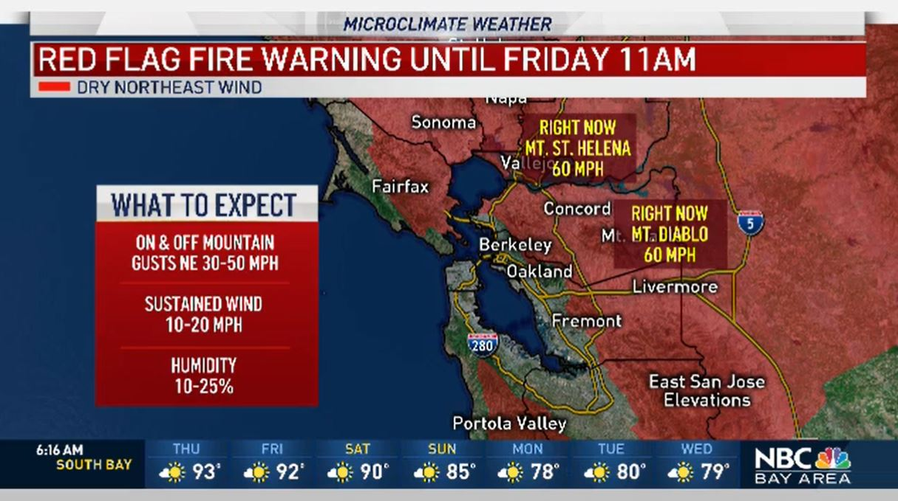
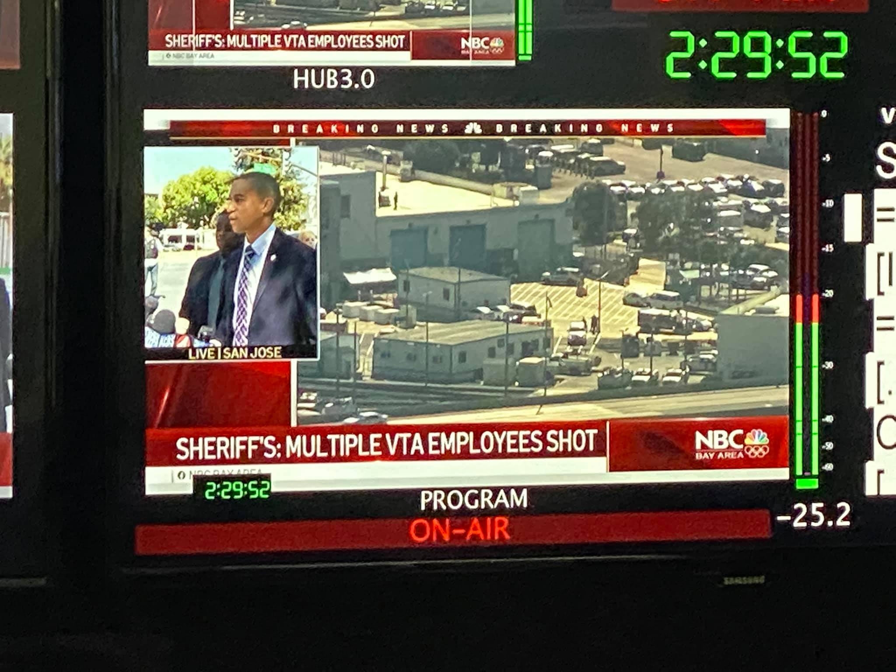
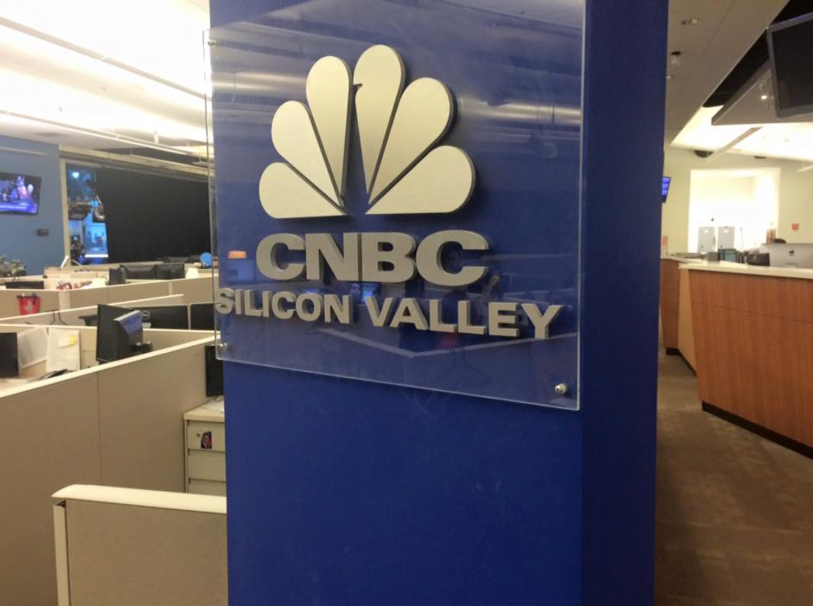
I covered it, and I lived it

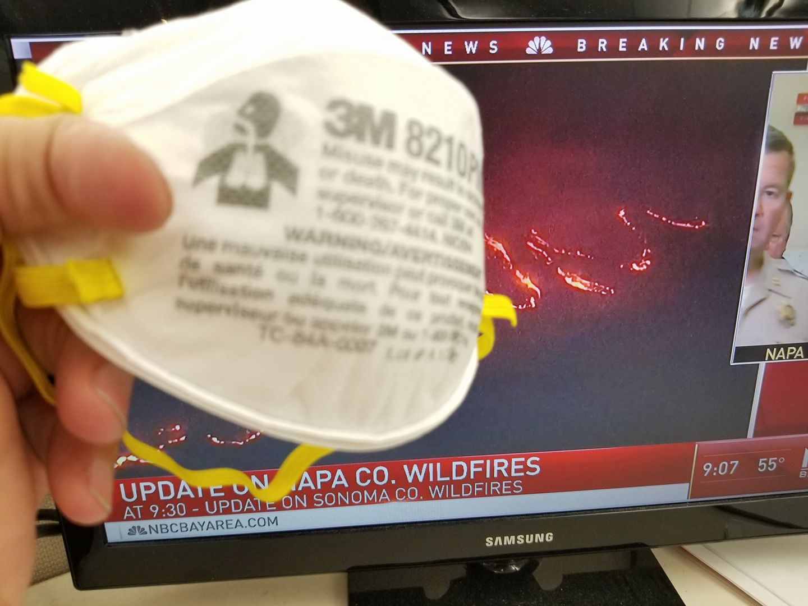
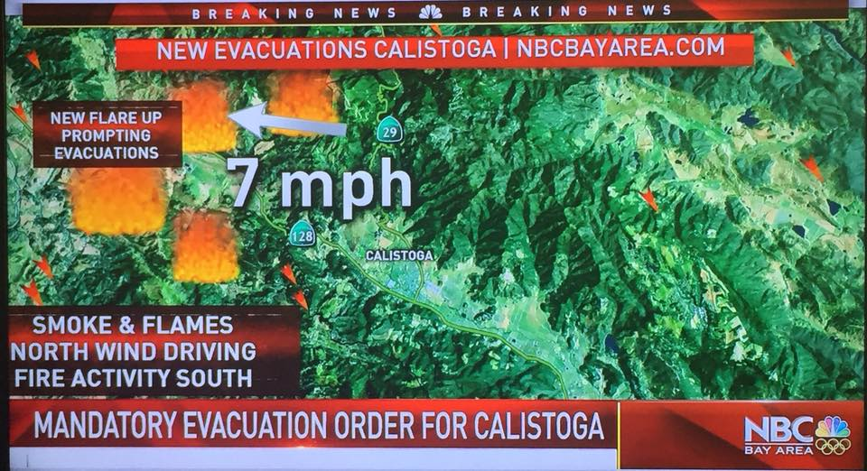
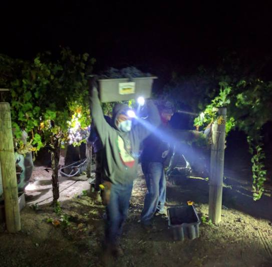
Historic wildfires
Directed extended multiplatform coverage of the 2017 Wine Country fires, the Camp and Carr fires and the Mendocino Complex. Field crews, newsroom operations and digital execution at peak emergency.
Atmospheric rivers & flooding
Storm-and-flood coverage across the Bay Area. The winter events that close roads, cut power and put neighborhoods under water.
Morning news, reimagined
Rebuilt morning programming through the pandemic as audience habits broke and re-formed, one of the most disruptive moments in modern news consumption.
Silicon Valley
Learned the technology industry from inside its own market: the companies, the money and the way both reshape a region. I look beyond the product launch to how technology changes how people live and work.
Early OTT
We experimented with OTT programming on Apple TV and Roku early, learning what streaming-native audiences would actually watch.
Leadership academy
Trained at NBC’s leadership academy at West Coast headquarters in Universal City.
A specialty, not a filler segment
I treat weather as service journalism, not filler. I have directed coverage of Florida hurricanes and tropical storms, California atmospheric rivers and floods, Northern California firestorms and Bay Area microclimates. In Miami I oversaw the weather department and helped launch a hyper-local South Florida weather brand built around disruptive, high-impact conditions.
I love weather coverage, and I think most newsrooms undersell it. It is the one story that reaches every single person in a market on the same day. The commute, the power bill, the roof, the kid’s game, the evacuation order.
I have run coverage of hurricanes and tropical storms in Florida, California’s atmospheric rivers and flood events, devastating firestorms across Northern California, and Bay Area microclimates where the forecast changes over a single ridgeline. In Miami I oversaw the weather department and helped launch a new hyper-local weather brand for South Florida.
Done right it is not a segment. It is service journalism with the largest possible audience.
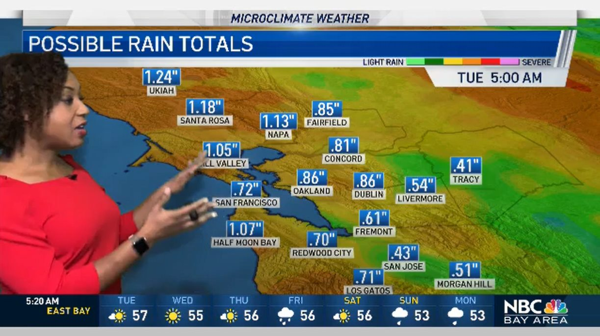
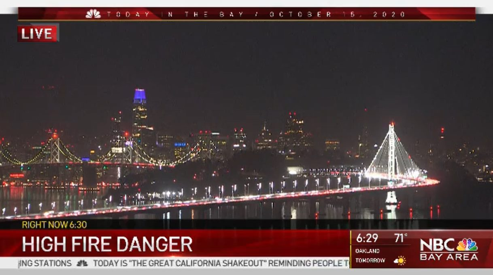

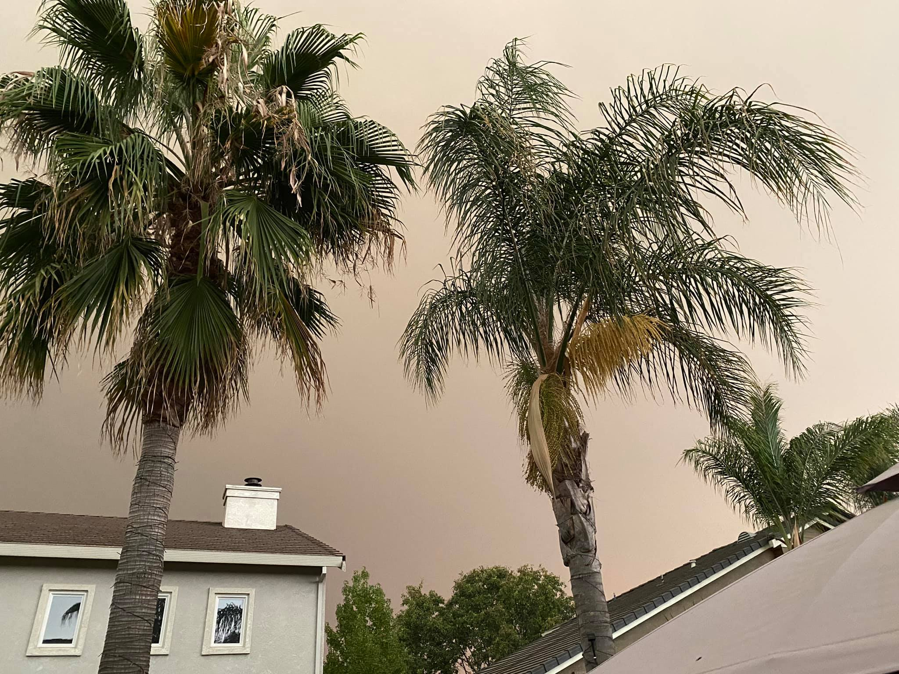
Grand Rapids · WOOD TV8 · eight years
I went from WOOD TV8 intern to producer, executive producer and assistant news director, learning every newsroom job before running one. I directed the multi-day coverage of President Gerald R. Ford’s death, funeral and homecoming, then was loaned to programming to conceive and launch eightWest—the format, segments, commercial structure, marketing and early social presence.
Intern, producer, executive producer, assistant news director. I learned every job in the newsroom before I ever ran one. West Michigan is home, and Grand Rapids is where my career began. A WOOD internship became a full-time job before graduation. I worked overnights, drove eighty miles back to school, and eventually moved from producer to assistant news director before joining WISH-TV in Indianapolis.
These were the people I grew up watching on West Michigan television. Not long after, in my twenties, I was their boss. Leading anchors and reporters with decades of experience on me was the hardest thing I had done to that point, and it taught me how I still lead: lean on the people who know more than you do, and listen. Be humble, stay willing to learn, and let the experience in the room make the work better.
The marquee assignment · a president comes home
Gerald R. Ford was Grand Rapids’ own. I directed coverage of his death, his funeral and his homecoming. Days of continuous, nationally-attended coverage in the city that raised him, with the whole newsroom deployed across the state and Washington.
It taught me what sustained coverage really costs: not one big day, but a plan that survives the fifth day, the crew rotation, the live window nobody scheduled, and the moment the story stops being national and becomes local grief.
The eightWest case study →

Decide what matters, get the right people to it, make sure the audience can find it.